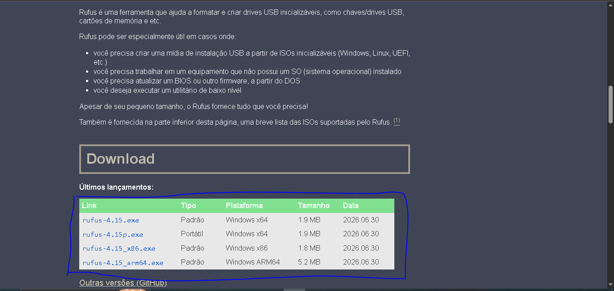
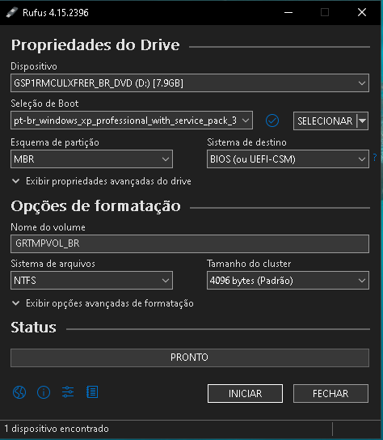
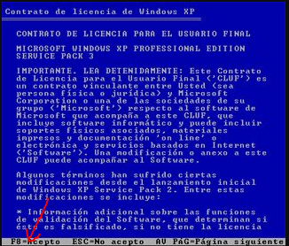
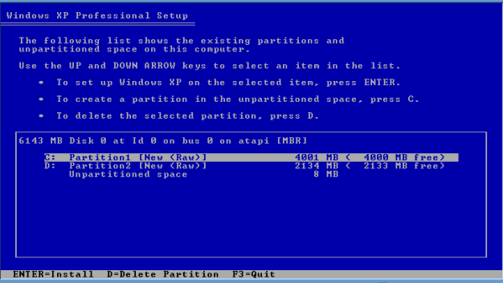
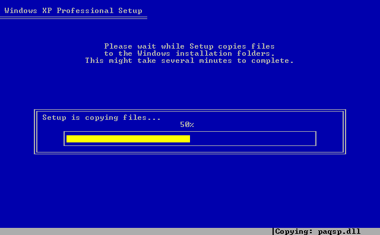
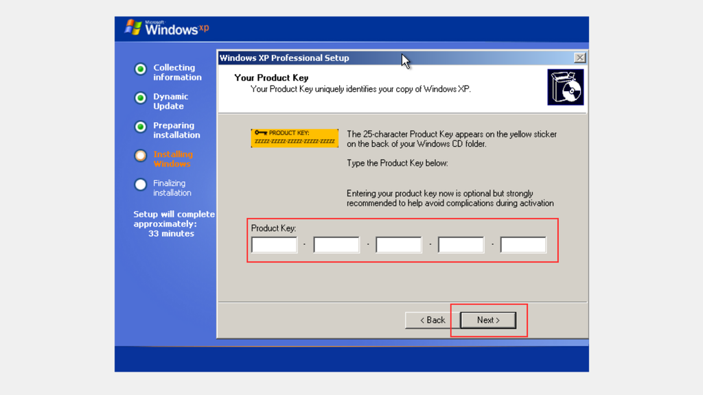

Como instalar o Windows XP passo a passo
Aprenda a criar um pendrive bootável e conheça as etapas da instalação do Windows XP, desde a preparação da mídia até a configuração inicial do sistema.
Antes de começar
A instalação pode apagar os arquivos do disco selecionado. Faça backup de todos os documentos importantes antes de iniciar o procedimento.
- Pendrive de pelo menos 2 GB;
- ISO legítima do Windows XP;
- Chave de produto válida;
- Computador compatível;
- Rufus para preparar a mídia.
1. Baixar o Rufus
O Rufus é uma ferramenta utilizada para criar pendrives inicializáveis a partir de imagens ISO.
Acesse o site oficial: Baixar Rufus

O Rufus não precisa de uma instalação tradicional: normalmente basta baixar e executar o arquivo.
2. Conectar o pendrive

3. Selecionar a ISO do Windows XP

4. Criar o pendrive bootável
- Confirme o pendrive selecionado.
- Confira se não existem arquivos importantes nele.
- Clique em Iniciar.
- Leia e confirme os avisos apresentados.
- Aguarde o término do processo.
- Feche o Rufus quando a operação terminar.
5. Iniciar o computador pelo pendrive
Agora, conecte o pendrive ao computador onde deseja instalar o Windows XP.
- Reinicie o computador.
- Abra o menu de boot ou a BIOS.
- Procure a opção do pendrive.
- Selecione o pendrive e pressione Enter.
A tecla de acesso pode variar. Alguns computadores utilizam F12, F11, F9, Esc ou Del.
6. Iniciar o instalador do Windows XP
Depois de iniciar pelo pendrive, o instalador poderá carregar arquivos e mostrar a tela azul de instalação.

7. Escolher a partição
Uma partição é uma área organizada do disco. O Windows será instalado na partição escolhida.
- Observe as partições apresentadas.
- Identifique o disco correto.
- Escolha a partição destinada ao Windows XP.

8. Formatar a partição
A formatação prepara a partição para receber os arquivos do sistema operacional.
- Selecione a opção de formatação desejada.
- Leia o aviso apresentado pelo instalador.
- Confirme somente depois de verificar o disco correto.
- Aguarde o término da formatação.
O Windows XP pode utilizar sistemas de arquivos como NTFS e FAT. O NTFS é uma opção comum para instalações do Windows XP.
9. Cópia dos arquivos
Depois da formatação, o instalador copia os arquivos necessários para o disco.
- Os arquivos de instalação são copiados.
- O computador pode reiniciar.
- A instalação continua automaticamente.
- Novas telas de configuração serão exibidas.

10. Configuração inicial
Durante essa etapa, o instalador solicitará informações para concluir a instalação.
- Idioma e região;
- Nome do usuário;
- Nome do computador;
- Chave de produto, quando solicitada;
- Data e horário;
- Configurações de rede.

11. O que fazer depois da instalação?
Depois de instalar o Windows XP, pode ser necessário instalar os drivers compatíveis com o computador.
- Driver de vídeo;
- Driver de áudio;
- Driver de rede;
- Drivers do chipset e da placa-mãe;
- Configuração de data e horário;
- Ativação com uma chave válida.
Conclusão
A instalação do Windows XP envolve a criação do pendrive bootável, a inicialização pelo USB, a escolha da partição, a formatação, a cópia dos arquivos e a configuração inicial.
Como o sistema é antigo, a compatibilidade com computadores modernos pode ser limitada. Faça o procedimento em um equipamento de testes e mantenha seus arquivos protegidos.